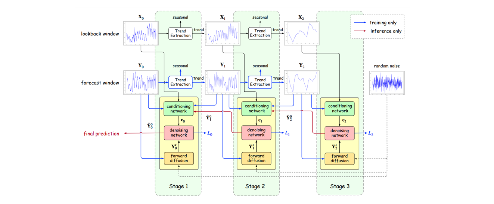
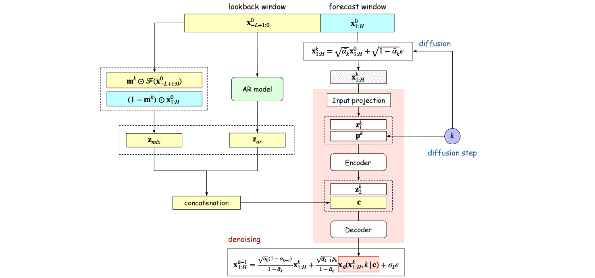
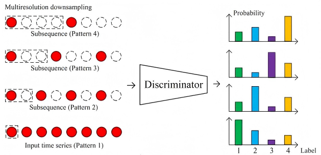
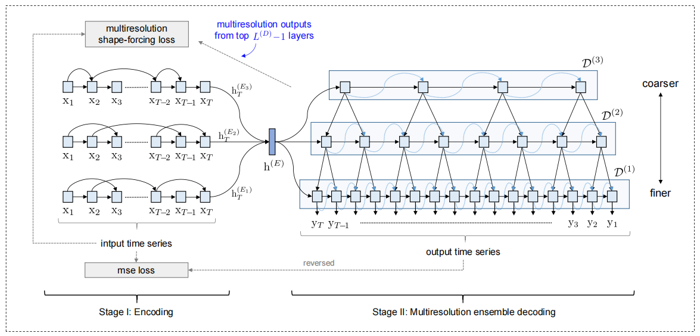
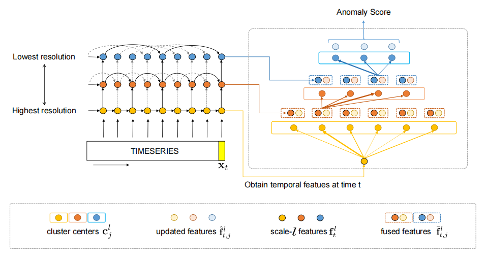
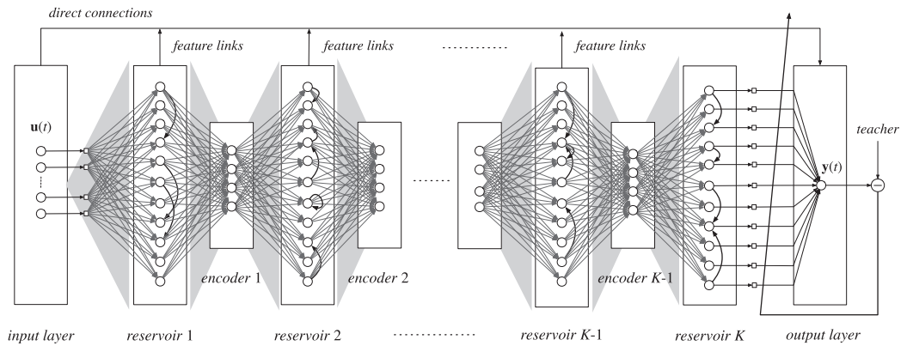
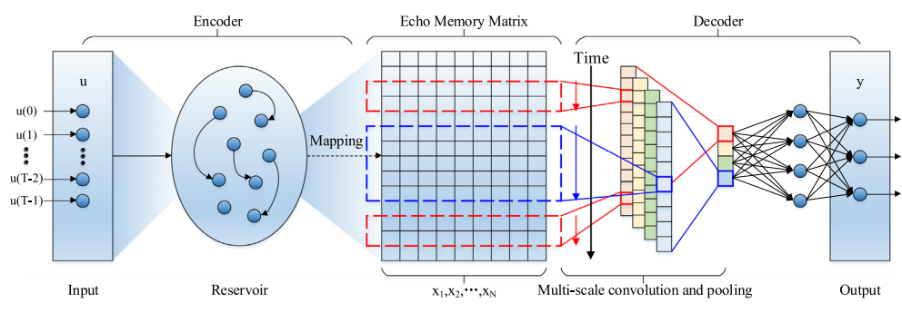
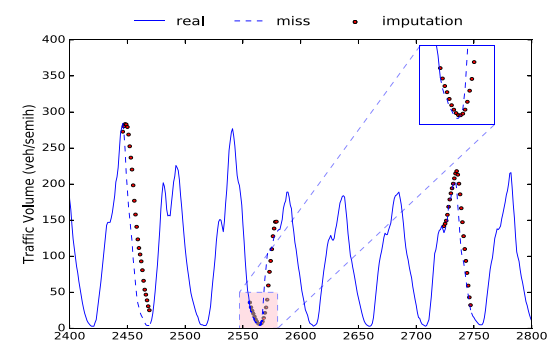
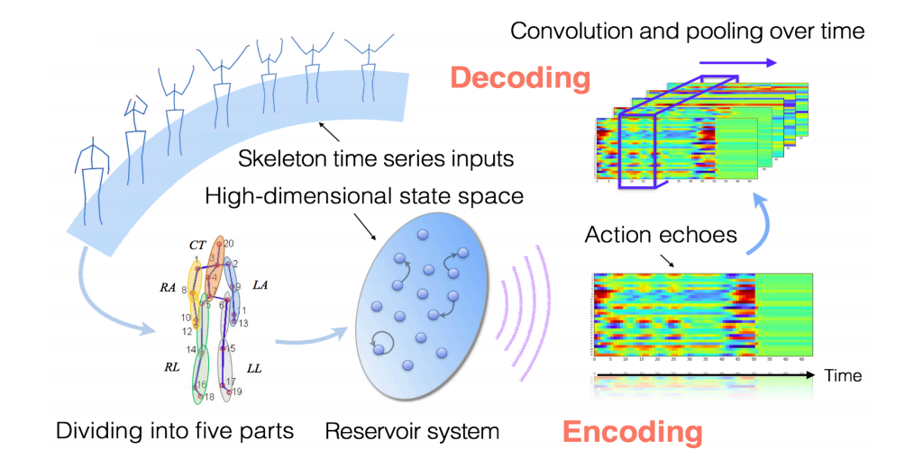
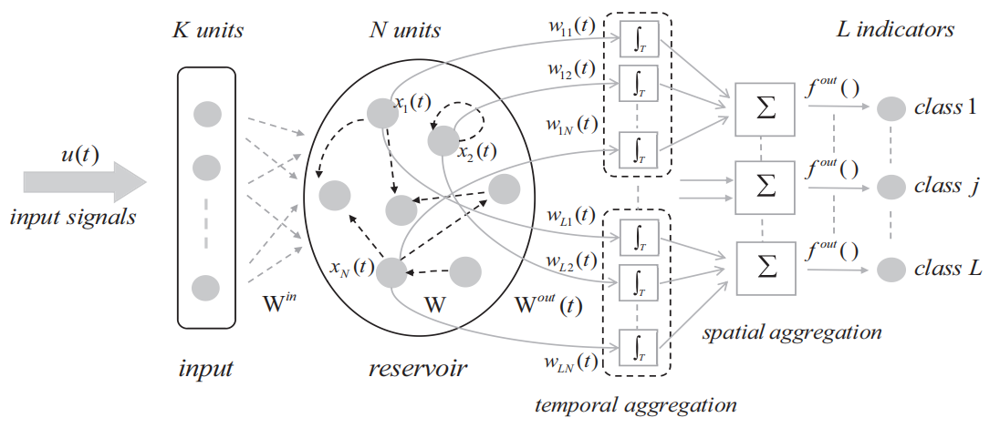

2026.01 – 2029.12
可解释机器学习的模型机理及关键问题研究
国家自然科学基金项目（面上） · 参与
重庆邮电大学 · 人工智能学院
沈礼锋（男，汉族，籍贯广东），博士，副教授，硕士生导师。毕业于香港科技大学，师从 James T. Kwok 教授。于2024年11月加入重庆邮电大学 / 人工智能学院，所属大数据智能计算创新团队（团队负责人：王国胤教授）和计算智能重庆市重点实验室。于2025年成为中国人工智能学会粒计算与知识发现专业委员会委员，同时担任国际会议 IJCAI2025 Workflow Chair。研究成果发表于 ICML、NeurIPS、ICLR、AAAI等顶级人工智能国际会议。在学术服务方面，长期承担国际会议和国际期刊的审稿工作。工程应用涉及医学心电信号智能监测、工业设备异常预警、电网用电需求预测、金融反洗黑钱、智能审计大模型等场景（更多相关链接：官方主页、谷歌学术）。
Doing what you like is freedom. Liking what you do is happiness.
📚 教育背景
🔬 研究方向
🎓 常年招收研究生（硕士）与优秀本科生，欢迎对研究充满热情、有意在顶级会议发表成果的同学联系我。具体要求请见招生页面，或直接发邮件至 shenlifeng@cqupt.edu.cn。
论文录用 · 学术服务 · 团队进展
持续更新近期论文录用、学术服务与团队进展。
科研项目 · 教学情况
国家自然科学基金项目（面上） · 参与
重庆邮电大学人才引进项目 · 主持
近五年同行引用 1300 余次，最高单篇引用超 500 次






Neurocomputing, 491: 261–272







博士生 · 硕士生 · 本科生
一个核不够用，那就多来几个 🧠✖️N
在混沌中寻找秩序，方向正在孵化中 🥚
数据起伏，我来抓妖 🔵
无中生有，距离量出美 🎨📐
把时间的故事，画成一幅画 🖼️
尔尔凭空造点什么出来 ✨
数据缺了什么我来补，人生也一样 🧩
方向未定，但热情已满格 🔥
研究方向在路上，咖啡已就位 ☕
正在赋予数据以灵魂 ✨
保持神秘感，探索中 🎩
未来方向由今日的代码决定 💻
新手上路，前途无量 🌟
每天进步一点点，方向自然来 🚀
保持好奇，慢慢靠近理想方向 ✨
佛系研究，随缘入坑 🍃
先把论文读完再谈方向 📚
相册科研路上，亦共同成长
📷 暮色温柔，笑意与晚风一起留在了这一刻。
学科方向 · 招生要求 · 加分项
欢迎来访，感谢关注与交流